3D Models - Cardboard, Laser Cutter, PLA, 3D Printer
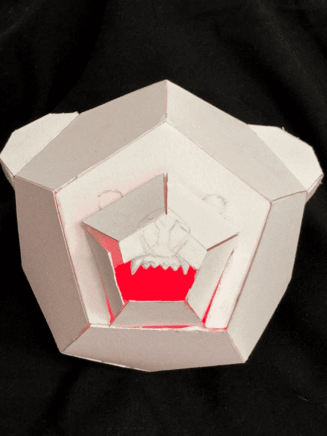
Angry Bear - Bristol Paper, Red LED, Conductive Tape
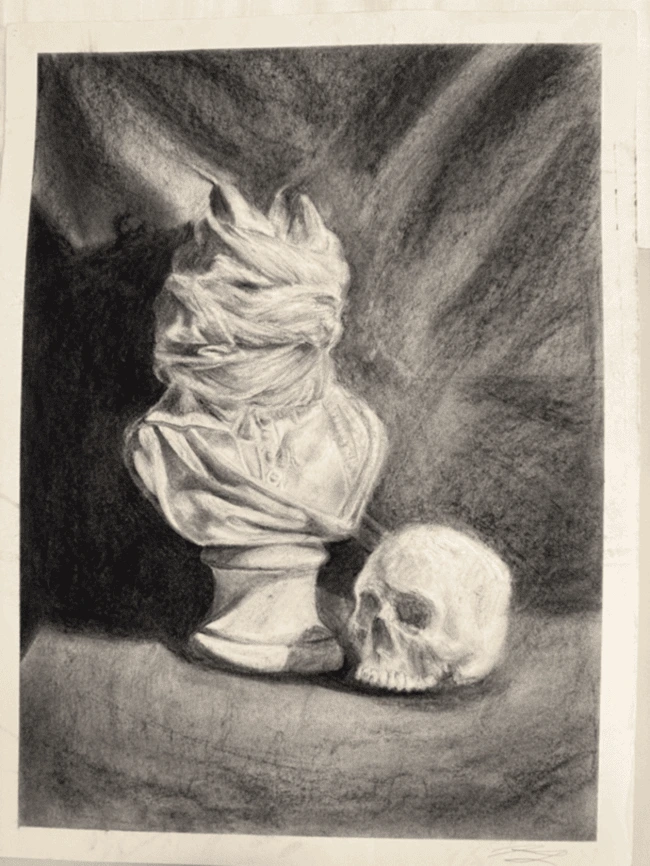
Unknown - Charcoal
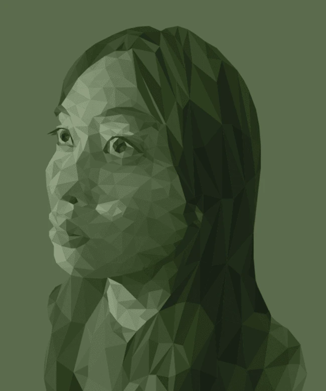
Low Poly Self Portrait - Adobe Illustrator
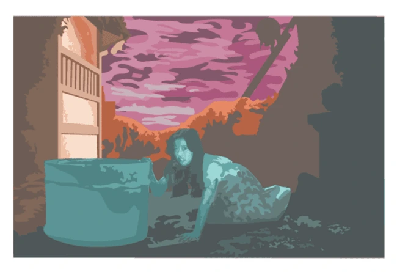
Hausu - Adobe Illustrator
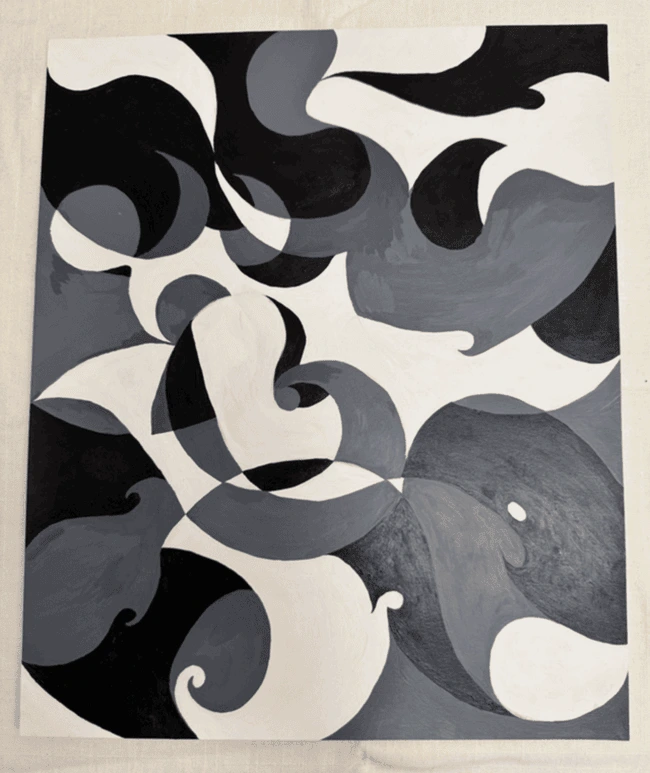
Flow - Acrylic Paint
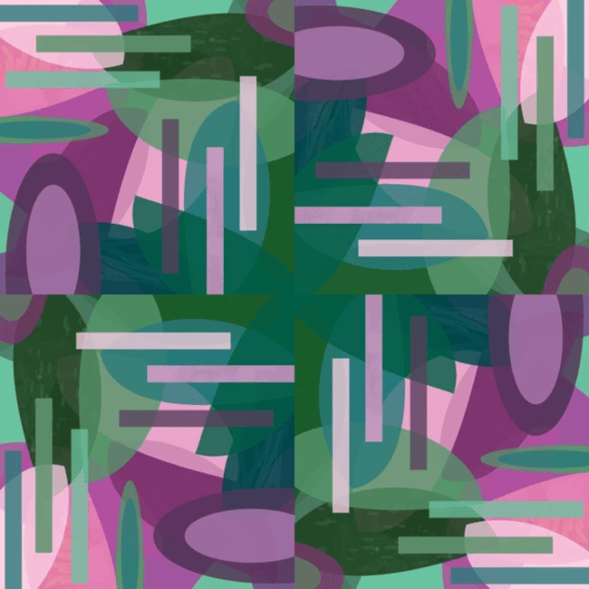
A Lily Pad - Adobe Illustrator
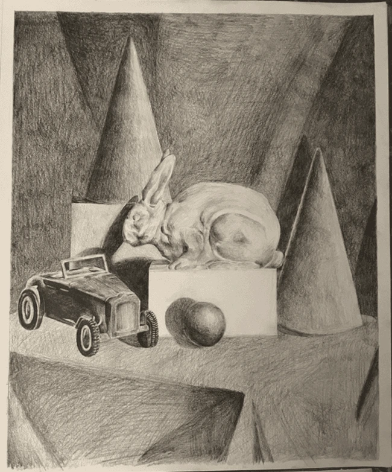
Still Life - Graphite Pencil
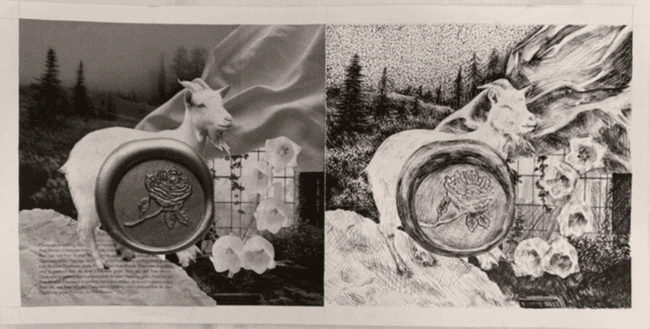
The Dream - Collage, Micron Pen
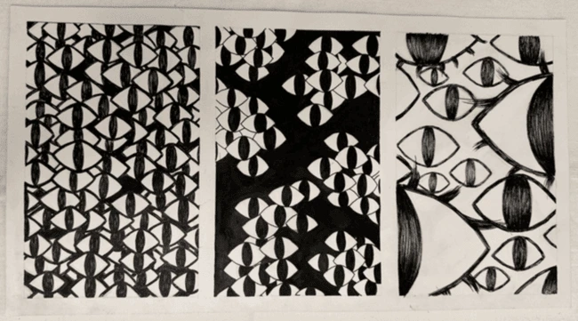
Watching - Micron Pen
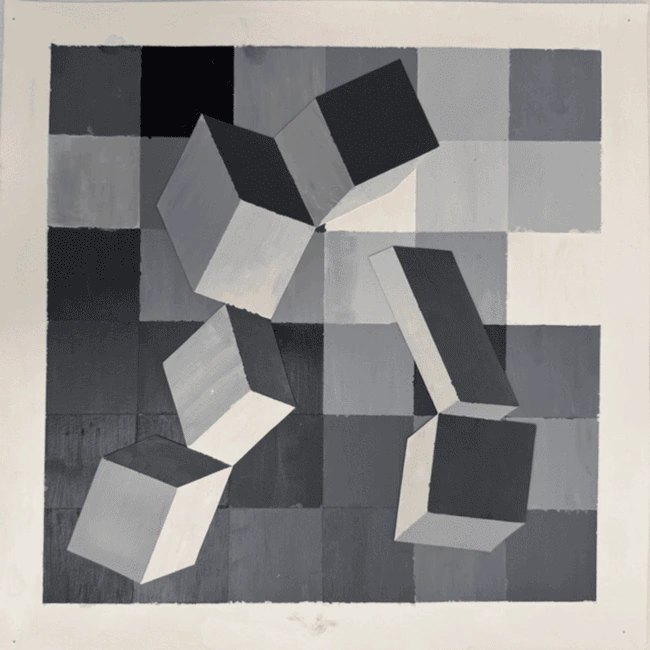
Experiment in Space - Acrylic Paint
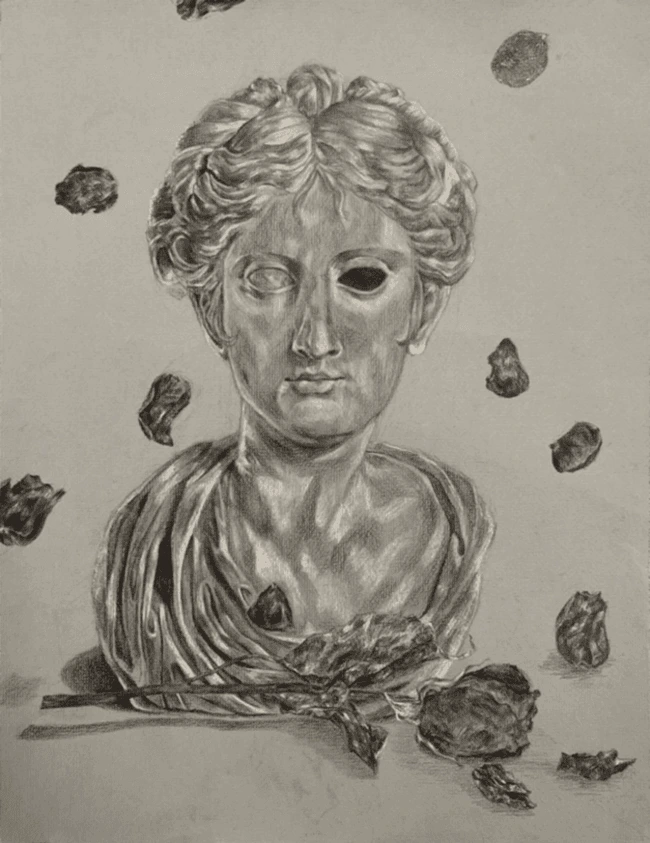
Aphrodite's Demise - Graphite & Charcoal Pencil
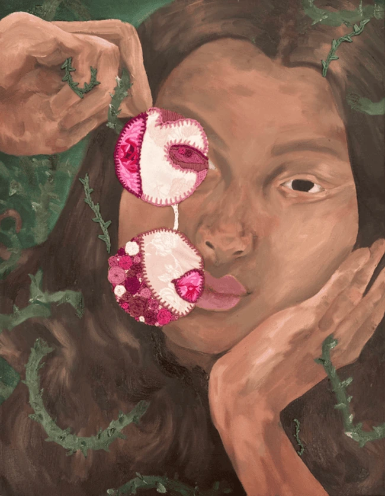
Rose-Colored Deception - Oil Paint, Fabric Appliqué, Embroidery Thread
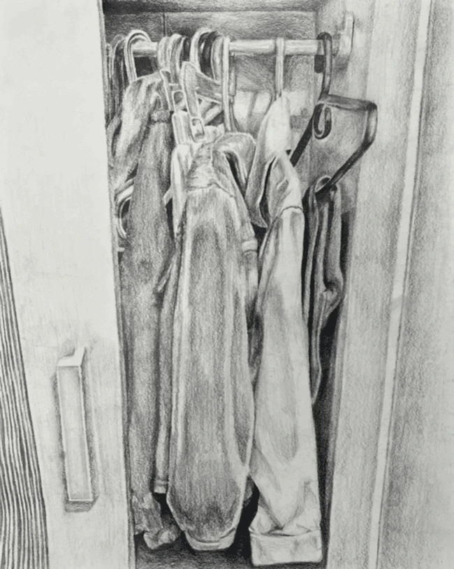
Overflowing - Graphite Pencil
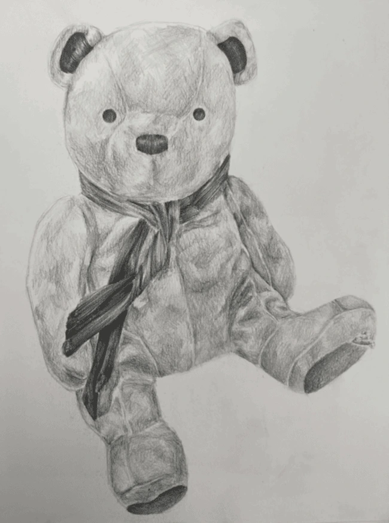
Innocence - Graphite Pencil
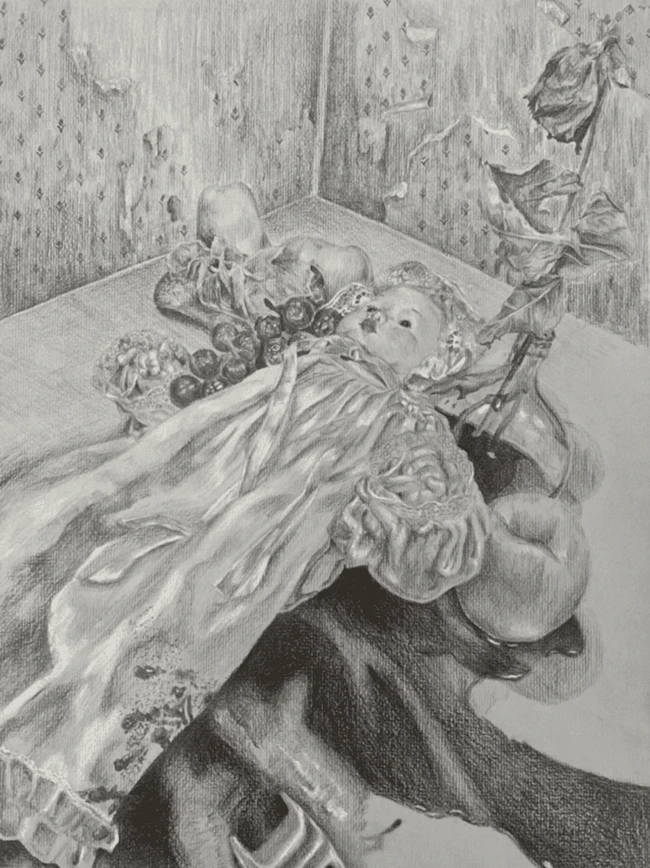
Scene - Graphite & Charcoal Pencil
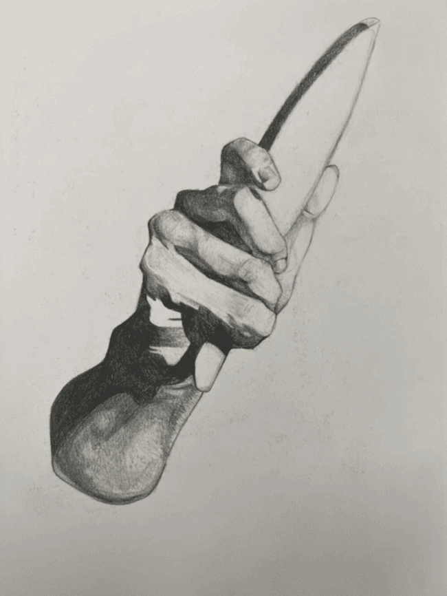
Charles Bargue Study - Graphite Pencil
Bust - Oil Paint